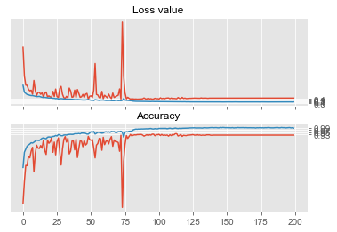
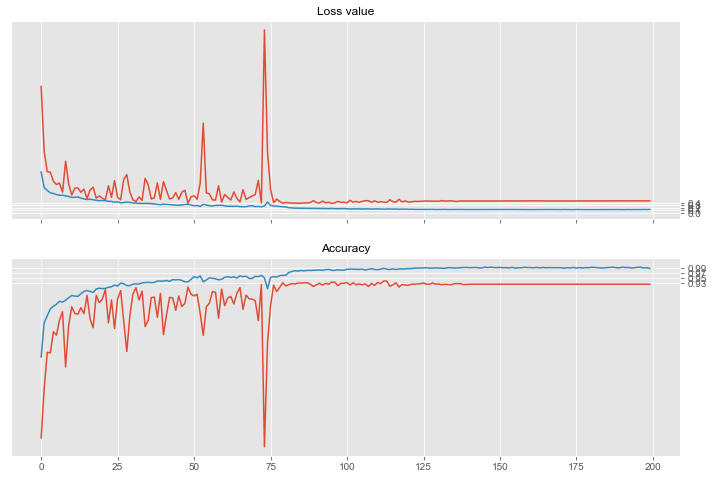

In [3]: runfile('C:/Users/Sunil/National University of Singapore/PRML CA2 - Image Classifier/submission/Veg_Classifier_Resnet.py', wdir='C:/Users/Sunil/National University of Singapore/PRML CA2 - Image Classifier/submission')
Reloaded modules: temp_model
Size of training dataset- 4973
Size of training dataset- 4973
Size of validation dataset- 878
Size of validation dataset- 878
__________________________________________________________________________________________________
Layer (type) Output Shape Param # Connected to
==================================================================================================
input_6 (InputLayer) (None, 128, 128, 3) 0
__________________________________________________________________________________________________
Inpt_conv (Conv2D) (None, 128, 128, 16) 448 input_6[0][0]
__________________________________________________________________________________________________
Inpt_bn (BatchNormalizationV1) (None, 128, 128, 16) 64 Inpt_conv[0][0]
__________________________________________________________________________________________________
Inpt_relu (Activation) (None, 128, 128, 16) 0 Inpt_bn[0][0]
__________________________________________________________________________________________________
Stg1_Blk1_Res1_conv (Conv2D) (None, 128, 128, 16) 2320 Inpt_relu[0][0]
__________________________________________________________________________________________________
Stg1_Blk1_Res1_bn (BatchNormali (None, 128, 128, 16) 64 Stg1_Blk1_Res1_conv[0][0]
__________________________________________________________________________________________________
Stg1_Blk1_Res1_relu (Activation (None, 128, 128, 16) 0 Stg1_Blk1_Res1_bn[0][0]
__________________________________________________________________________________________________
Stg1_Blk1_Res2_conv (Conv2D) (None, 128, 128, 16) 2320 Stg1_Blk1_Res1_relu[0][0]
__________________________________________________________________________________________________
Stg1_Blk1_Res2_bn (BatchNormali (None, 128, 128, 16) 64 Stg1_Blk1_Res2_conv[0][0]
__________________________________________________________________________________________________
Stg1_Blk1_add (Add) (None, 128, 128, 16) 0 Inpt_relu[0][0]
Stg1_Blk1_Res2_bn[0][0]
__________________________________________________________________________________________________
Stg1_Blk1_relu (Activation) (None, 128, 128, 16) 0 Stg1_Blk1_add[0][0]
__________________________________________________________________________________________________
Stg1_Blk2_Res1_conv (Conv2D) (None, 128, 128, 16) 2320 Stg1_Blk1_relu[0][0]
__________________________________________________________________________________________________
Stg1_Blk2_Res1_bn (BatchNormali (None, 128, 128, 16) 64 Stg1_Blk2_Res1_conv[0][0]
__________________________________________________________________________________________________
Stg1_Blk2_Res1_relu (Activation (None, 128, 128, 16) 0 Stg1_Blk2_Res1_bn[0][0]
__________________________________________________________________________________________________
Stg1_Blk2_Res2_conv (Conv2D) (None, 128, 128, 16) 2320 Stg1_Blk2_Res1_relu[0][0]
__________________________________________________________________________________________________
Stg1_Blk2_Res2_bn (BatchNormali (None, 128, 128, 16) 64 Stg1_Blk2_Res2_conv[0][0]
__________________________________________________________________________________________________
Stg1_Blk2_add (Add) (None, 128, 128, 16) 0 Stg1_Blk1_relu[0][0]
Stg1_Blk2_Res2_bn[0][0]
__________________________________________________________________________________________________
Stg1_Blk2_relu (Activation) (None, 128, 128, 16) 0 Stg1_Blk2_add[0][0]
__________________________________________________________________________________________________
Stg1_Blk3_Res1_conv (Conv2D) (None, 128, 128, 16) 2320 Stg1_Blk2_relu[0][0]
__________________________________________________________________________________________________
Stg1_Blk3_Res1_bn (BatchNormali (None, 128, 128, 16) 64 Stg1_Blk3_Res1_conv[0][0]
__________________________________________________________________________________________________
Stg1_Blk3_Res1_relu (Activation (None, 128, 128, 16) 0 Stg1_Blk3_Res1_bn[0][0]
__________________________________________________________________________________________________
Stg1_Blk3_Res2_conv (Conv2D) (None, 128, 128, 16) 2320 Stg1_Blk3_Res1_relu[0][0]
__________________________________________________________________________________________________
Stg1_Blk3_Res2_bn (BatchNormali (None, 128, 128, 16) 64 Stg1_Blk3_Res2_conv[0][0]
__________________________________________________________________________________________________
Stg1_Blk3_add (Add) (None, 128, 128, 16) 0 Stg1_Blk2_relu[0][0]
Stg1_Blk3_Res2_bn[0][0]
__________________________________________________________________________________________________
Stg1_Blk3_relu (Activation) (None, 128, 128, 16) 0 Stg1_Blk3_add[0][0]
__________________________________________________________________________________________________
Stg2_Blk1_Res1_conv (Conv2D) (None, 64, 64, 32) 4640 Stg1_Blk3_relu[0][0]
__________________________________________________________________________________________________
Stg2_Blk1_Res1_bn (BatchNormali (None, 64, 64, 32) 128 Stg2_Blk1_Res1_conv[0][0]
__________________________________________________________________________________________________
Stg2_Blk1_Res1_relu (Activation (None, 64, 64, 32) 0 Stg2_Blk1_Res1_bn[0][0]
__________________________________________________________________________________________________
Stg2_Blk1_Res2_conv (Conv2D) (None, 64, 64, 32) 9248 Stg2_Blk1_Res1_relu[0][0]
__________________________________________________________________________________________________
Stg2_Blk1_lin_conv (Conv2D) (None, 64, 64, 32) 544 Stg1_Blk3_relu[0][0]
__________________________________________________________________________________________________
Stg2_Blk1_Res2_bn (BatchNormali (None, 64, 64, 32) 128 Stg2_Blk1_Res2_conv[0][0]
__________________________________________________________________________________________________
Stg2_Blk1_add (Add) (None, 64, 64, 32) 0 Stg2_Blk1_lin_conv[0][0]
Stg2_Blk1_Res2_bn[0][0]
__________________________________________________________________________________________________
Stg2_Blk1_relu (Activation) (None, 64, 64, 32) 0 Stg2_Blk1_add[0][0]
__________________________________________________________________________________________________
Stg2_Blk2_Res1_conv (Conv2D) (None, 64, 64, 32) 9248 Stg2_Blk1_relu[0][0]
__________________________________________________________________________________________________
Stg2_Blk2_Res1_bn (BatchNormali (None, 64, 64, 32) 128 Stg2_Blk2_Res1_conv[0][0]
__________________________________________________________________________________________________
Stg2_Blk2_Res1_relu (Activation (None, 64, 64, 32) 0 Stg2_Blk2_Res1_bn[0][0]
__________________________________________________________________________________________________
Stg2_Blk2_Res2_conv (Conv2D) (None, 64, 64, 32) 9248 Stg2_Blk2_Res1_relu[0][0]
__________________________________________________________________________________________________
Stg2_Blk2_Res2_bn (BatchNormali (None, 64, 64, 32) 128 Stg2_Blk2_Res2_conv[0][0]
__________________________________________________________________________________________________
Stg2_Blk2_add (Add) (None, 64, 64, 32) 0 Stg2_Blk1_relu[0][0]
Stg2_Blk2_Res2_bn[0][0]
__________________________________________________________________________________________________
Stg2_Blk2_relu (Activation) (None, 64, 64, 32) 0 Stg2_Blk2_add[0][0]
__________________________________________________________________________________________________
Stg2_Blk3_Res1_conv (Conv2D) (None, 64, 64, 32) 9248 Stg2_Blk2_relu[0][0]
__________________________________________________________________________________________________
Stg2_Blk3_Res1_bn (BatchNormali (None, 64, 64, 32) 128 Stg2_Blk3_Res1_conv[0][0]
__________________________________________________________________________________________________
Stg2_Blk3_Res1_relu (Activation (None, 64, 64, 32) 0 Stg2_Blk3_Res1_bn[0][0]
__________________________________________________________________________________________________
Stg2_Blk3_Res2_conv (Conv2D) (None, 64, 64, 32) 9248 Stg2_Blk3_Res1_relu[0][0]
__________________________________________________________________________________________________
Stg2_Blk3_Res2_bn (BatchNormali (None, 64, 64, 32) 128 Stg2_Blk3_Res2_conv[0][0]
__________________________________________________________________________________________________
Stg2_Blk3_add (Add) (None, 64, 64, 32) 0 Stg2_Blk2_relu[0][0]
Stg2_Blk3_Res2_bn[0][0]
__________________________________________________________________________________________________
Stg2_Blk3_relu (Activation) (None, 64, 64, 32) 0 Stg2_Blk3_add[0][0]
__________________________________________________________________________________________________
Stg3_Blk1_Res1_conv (Conv2D) (None, 32, 32, 64) 18496 Stg2_Blk3_relu[0][0]
__________________________________________________________________________________________________
Stg3_Blk1_Res1_bn (BatchNormali (None, 32, 32, 64) 256 Stg3_Blk1_Res1_conv[0][0]
__________________________________________________________________________________________________
Stg3_Blk1_Res1_relu (Activation (None, 32, 32, 64) 0 Stg3_Blk1_Res1_bn[0][0]
__________________________________________________________________________________________________
Stg3_Blk1_Res2_conv (Conv2D) (None, 32, 32, 64) 36928 Stg3_Blk1_Res1_relu[0][0]
__________________________________________________________________________________________________
Stg3_Blk1_lin_conv (Conv2D) (None, 32, 32, 64) 2112 Stg2_Blk3_relu[0][0]
__________________________________________________________________________________________________
Stg3_Blk1_Res2_bn (BatchNormali (None, 32, 32, 64) 256 Stg3_Blk1_Res2_conv[0][0]
__________________________________________________________________________________________________
Stg3_Blk1_add (Add) (None, 32, 32, 64) 0 Stg3_Blk1_lin_conv[0][0]
Stg3_Blk1_Res2_bn[0][0]
__________________________________________________________________________________________________
Stg3_Blk1_relu (Activation) (None, 32, 32, 64) 0 Stg3_Blk1_add[0][0]
__________________________________________________________________________________________________
Stg3_Blk2_Res1_conv (Conv2D) (None, 32, 32, 64) 36928 Stg3_Blk1_relu[0][0]
__________________________________________________________________________________________________
Stg3_Blk2_Res1_bn (BatchNormali (None, 32, 32, 64) 256 Stg3_Blk2_Res1_conv[0][0]
__________________________________________________________________________________________________
Stg3_Blk2_Res1_relu (Activation (None, 32, 32, 64) 0 Stg3_Blk2_Res1_bn[0][0]
__________________________________________________________________________________________________
Stg3_Blk2_Res2_conv (Conv2D) (None, 32, 32, 64) 36928 Stg3_Blk2_Res1_relu[0][0]
__________________________________________________________________________________________________
Stg3_Blk2_Res2_bn (BatchNormali (None, 32, 32, 64) 256 Stg3_Blk2_Res2_conv[0][0]
__________________________________________________________________________________________________
Stg3_Blk2_add (Add) (None, 32, 32, 64) 0 Stg3_Blk1_relu[0][0]
Stg3_Blk2_Res2_bn[0][0]
__________________________________________________________________________________________________
Stg3_Blk2_relu (Activation) (None, 32, 32, 64) 0 Stg3_Blk2_add[0][0]
__________________________________________________________________________________________________
Stg3_Blk3_Res1_conv (Conv2D) (None, 32, 32, 64) 36928 Stg3_Blk2_relu[0][0]
__________________________________________________________________________________________________
Stg3_Blk3_Res1_bn (BatchNormali (None, 32, 32, 64) 256 Stg3_Blk3_Res1_conv[0][0]
__________________________________________________________________________________________________
Stg3_Blk3_Res1_relu (Activation (None, 32, 32, 64) 0 Stg3_Blk3_Res1_bn[0][0]
__________________________________________________________________________________________________
Stg3_Blk3_Res2_conv (Conv2D) (None, 32, 32, 64) 36928 Stg3_Blk3_Res1_relu[0][0]
__________________________________________________________________________________________________
Stg3_Blk3_Res2_bn (BatchNormali (None, 32, 32, 64) 256 Stg3_Blk3_Res2_conv[0][0]
__________________________________________________________________________________________________
Stg3_Blk3_add (Add) (None, 32, 32, 64) 0 Stg3_Blk2_relu[0][0]
Stg3_Blk3_Res2_bn[0][0]
__________________________________________________________________________________________________
Stg3_Blk3_relu (Activation) (None, 32, 32, 64) 0 Stg3_Blk3_add[0][0]
__________________________________________________________________________________________________
Stg4_Blk1_Res1_conv (Conv2D) (None, 16, 16, 128) 73856 Stg3_Blk3_relu[0][0]
__________________________________________________________________________________________________
Stg4_Blk1_Res1_bn (BatchNormali (None, 16, 16, 128) 512 Stg4_Blk1_Res1_conv[0][0]
__________________________________________________________________________________________________
Stg4_Blk1_Res1_relu (Activation (None, 16, 16, 128) 0 Stg4_Blk1_Res1_bn[0][0]
__________________________________________________________________________________________________
Stg4_Blk1_Res2_conv (Conv2D) (None, 16, 16, 128) 147584 Stg4_Blk1_Res1_relu[0][0]
__________________________________________________________________________________________________
Stg4_Blk1_lin_conv (Conv2D) (None, 16, 16, 128) 8320 Stg3_Blk3_relu[0][0]
__________________________________________________________________________________________________
Stg4_Blk1_Res2_bn (BatchNormali (None, 16, 16, 128) 512 Stg4_Blk1_Res2_conv[0][0]
__________________________________________________________________________________________________
Stg4_Blk1_add (Add) (None, 16, 16, 128) 0 Stg4_Blk1_lin_conv[0][0]
Stg4_Blk1_Res2_bn[0][0]
__________________________________________________________________________________________________
Stg4_Blk1_relu (Activation) (None, 16, 16, 128) 0 Stg4_Blk1_add[0][0]
__________________________________________________________________________________________________
Stg4_Blk2_Res1_conv (Conv2D) (None, 16, 16, 128) 147584 Stg4_Blk1_relu[0][0]
__________________________________________________________________________________________________
Stg4_Blk2_Res1_bn (BatchNormali (None, 16, 16, 128) 512 Stg4_Blk2_Res1_conv[0][0]
__________________________________________________________________________________________________
Stg4_Blk2_Res1_relu (Activation (None, 16, 16, 128) 0 Stg4_Blk2_Res1_bn[0][0]
__________________________________________________________________________________________________
Stg4_Blk2_Res2_conv (Conv2D) (None, 16, 16, 128) 147584 Stg4_Blk2_Res1_relu[0][0]
__________________________________________________________________________________________________
Stg4_Blk2_Res2_bn (BatchNormali (None, 16, 16, 128) 512 Stg4_Blk2_Res2_conv[0][0]
__________________________________________________________________________________________________
Stg4_Blk2_add (Add) (None, 16, 16, 128) 0 Stg4_Blk1_relu[0][0]
Stg4_Blk2_Res2_bn[0][0]
__________________________________________________________________________________________________
Stg4_Blk2_relu (Activation) (None, 16, 16, 128) 0 Stg4_Blk2_add[0][0]
__________________________________________________________________________________________________
Stg4_Blk3_Res1_conv (Conv2D) (None, 16, 16, 128) 147584 Stg4_Blk2_relu[0][0]
__________________________________________________________________________________________________
Stg4_Blk3_Res1_bn (BatchNormali (None, 16, 16, 128) 512 Stg4_Blk3_Res1_conv[0][0]
__________________________________________________________________________________________________
Stg4_Blk3_Res1_relu (Activation (None, 16, 16, 128) 0 Stg4_Blk3_Res1_bn[0][0]
__________________________________________________________________________________________________
Stg4_Blk3_Res2_conv (Conv2D) (None, 16, 16, 128) 147584 Stg4_Blk3_Res1_relu[0][0]
__________________________________________________________________________________________________
Stg4_Blk3_Res2_bn (BatchNormali (None, 16, 16, 128) 512 Stg4_Blk3_Res2_conv[0][0]
__________________________________________________________________________________________________
Stg4_Blk3_add (Add) (None, 16, 16, 128) 0 Stg4_Blk2_relu[0][0]
Stg4_Blk3_Res2_bn[0][0]
__________________________________________________________________________________________________
Stg4_Blk3_relu (Activation) (None, 16, 16, 128) 0 Stg4_Blk3_add[0][0]
__________________________________________________________________________________________________
AvgPool (AveragePooling2D) (None, 4, 4, 128) 0 Stg4_Blk3_relu[0][0]
__________________________________________________________________________________________________
flatten_5 (Flatten) (None, 2048) 0 AvgPool[0][0]
__________________________________________________________________________________________________
dense_15 (Dense) (None, 5) 10245 flatten_5[0][0]
==================================================================================================
Total params: 1,107,205
Trainable params: 1,104,293
Non-trainable params: 2,912
__________________________________________________________________________________________________
Learning rate: 0.001
Epoch 1/200
878/878 [==============================] - 1s 2ms/sample - loss: 5.0706 - acc: 0.3144[===========================>..] - ETA: 1s - loss: 1.6687 - acc: 0.6341
78/78 [==============================] - 30s 383ms/step - loss: 1.6467 - acc: 0.6364 - val_loss: 5.0679 - val_acc: 0.3144
Learning rate: 0.001
Epoch 2/200
878/878 [==============================] - 1s 969us/sample - loss: 2.4717 - acc: 0.5091==============>.............] - ETA: 7s - loss: 1.0427 - acc: 0.7581
78/78 [==============================] - 18s 229ms/step - loss: 1.0040 - acc: 0.7732 - val_loss: 2.4644 - val_acc: 0.5091
Learning rate: 0.001
Epoch 3/200
878/878 [==============================] - 1s 968us/sample - loss: 1.6548 - acc: 0.65490s - loss: 1.7259 - acc: 0.6693
78/78 [==============================] - 18s 230ms/step - loss: 0.8972 - acc: 0.8003 - val_loss: 1.6478 - val_acc: 0.6549
Learning rate: 0.001
Epoch 4/200
878/878 [==============================] - 1s 972us/sample - loss: 1.6362 - acc: 0.6526
78/78 [==============================] - 18s 229ms/step - loss: 0.7992 - acc: 0.8273 - val_loss: 1.6292 - val_acc: 0.6526
Learning rate: 0.001
Epoch 5/200
878/878 [==============================] - 1s 971us/sample - loss: 1.2584 - acc: 0.7369
78/78 [==============================] - 18s 231ms/step - loss: 0.7725 - acc: 0.8379 - val_loss: 1.2629 - val_acc: 0.7369
Learning rate: 0.001
Epoch 6/200
878/878 [==============================] - 1s 975us/sample - loss: 1.1333 - acc: 0.7232
78/78 [==============================] - 18s 230ms/step - loss: 0.7287 - acc: 0.8462 - val_loss: 1.1321 - val_acc: 0.7232
Learning rate: 0.001
Epoch 7/200
878/878 [==============================] - 1s 979us/sample - loss: 1.1861 - acc: 0.78250s - loss: 1.1737 - acc: 0.7984
78/78 [==============================] - 18s 231ms/step - loss: 0.7032 - acc: 0.8580 - val_loss: 1.1914 - val_acc: 0.7825
Learning rate: 0.001
Epoch 8/200
878/878 [==============================] - 1s 985us/sample - loss: 0.8233 - acc: 0.8166
78/78 [==============================] - 18s 233ms/step - loss: 0.7052 - acc: 0.8546 - val_loss: 0.8222 - val_acc: 0.8166
Learning rate: 0.001
Epoch 9/200
878/878 [==============================] - 1s 985us/sample - loss: 2.0689 - acc: 0.5968
78/78 [==============================] - 18s 230ms/step - loss: 0.6780 - acc: 0.8625 - val_loss: 2.0715 - val_acc: 0.5968
Learning rate: 0.001
Epoch 10/200
878/878 [==============================] - 1s 994us/sample - loss: 1.1596 - acc: 0.76200s - loss: 1.1463 - acc: 0.7734
78/78 [==============================] - 18s 230ms/step - loss: 0.6514 - acc: 0.8723 - val_loss: 1.1666 - val_acc: 0.7620
Learning rate: 0.001
Epoch 11/200
878/878 [==============================] - 1s 1000us/sample - loss: 0.7127 - acc: 0.8360
78/78 [==============================] - 18s 234ms/step - loss: 0.6162 - acc: 0.8810 - val_loss: 0.7114 - val_acc: 0.8360
Learning rate: 0.001
Epoch 12/200
878/878 [==============================] - 1s 994us/sample - loss: 0.9843 - acc: 0.8098
78/78 [==============================] - 18s 233ms/step - loss: 0.6205 - acc: 0.8785 - val_loss: 0.9854 - val_acc: 0.8098
Learning rate: 0.001
Epoch 13/200
878/878 [==============================] - 1s 996us/sample - loss: 1.0022 - acc: 0.8064============>...............] - ETA: 8s - loss: 0.6181 - acc: 0.8772
78/78 [==============================] - 18s 234ms/step - loss: 0.6335 - acc: 0.8775 - val_loss: 0.9975 - val_acc: 0.8064
Learning rate: 0.001
Epoch 14/200
878/878 [==============================] - 1s 989us/sample - loss: 0.8232 - acc: 0.8326
78/78 [==============================] - 18s 235ms/step - loss: 0.5871 - acc: 0.8882 - val_loss: 0.8190 - val_acc: 0.8326
Learning rate: 0.001
Epoch 15/200
878/878 [==============================] - 1s 1ms/sample - loss: 0.9469 - acc: 0.8087 12s - loss: 0.5727 - acc: 0.8920
78/78 [==============================] - 18s 236ms/step - loss: 0.5529 - acc: 0.8974 - val_loss: 0.9508 - val_acc: 0.8087
Learning rate: 0.001
Epoch 16/200
832/878 [===========================>..] - ETA: 0s - loss: 0.5692 - acc: 0.8798878/878 [==============================] - 1s 1ms/sample - loss: 0.5652 - acc: 0.8815
78/78 [==============================] - 19s 239ms/step - loss: 0.5306 - acc: 0.9009 - val_loss: 0.5639 - val_acc: 0.8815
Learning rate: 0.001
Epoch 17/200
878/878 [==============================] - 1s 1ms/sample - loss: 0.9174 - acc: 0.7882=========================>....] - ETA: 1s - loss: 0.5428 - acc: 0.8991
78/78 [==============================] - 18s 236ms/step - loss: 0.5432 - acc: 0.8968 - val_loss: 0.9115 - val_acc: 0.7882
Learning rate: 0.001
Epoch 18/200
878/878 [==============================] - 1s 1ms/sample - loss: 1.0256 - acc: 0.7528
78/78 [==============================] - 19s 237ms/step - loss: 0.5219 - acc: 0.8930 - val_loss: 1.0241 - val_acc: 0.7528
Learning rate: 0.001
Epoch 19/200
878/878 [==============================] - 1s 1ms/sample - loss: 0.5896 - acc: 0.8815
78/78 [==============================] - 19s 239ms/step - loss: 0.4978 - acc: 0.9067 - val_loss: 0.5872 - val_acc: 0.8815
Learning rate: 0.001
Epoch 20/200
878/878 [==============================] - 1s 987us/sample - loss: 0.6725 - acc: 0.8531
78/78 [==============================] - 19s 238ms/step - loss: 0.4846 - acc: 0.9099 - val_loss: 0.6738 - val_acc: 0.8531
Learning rate: 0.001
Epoch 21/200
878/878 [==============================] - 1s 1ms/sample - loss: 0.5896 - acc: 0.8667===========================>..] - ETA: 0s - loss: 0.4904 - acc: 0.9094
78/78 [==============================] - 19s 239ms/step - loss: 0.4918 - acc: 0.9083 - val_loss: 0.5896 - val_acc: 0.8667
Learning rate: 0.001
Epoch 22/200
878/878 [==============================] - 1s 1ms/sample - loss: 0.5211 - acc: 0.9043
78/78 [==============================] - 19s 241ms/step - loss: 0.4853 - acc: 0.9091 - val_loss: 0.5205 - val_acc: 0.9043
Learning rate: 0.001
Epoch 23/200
878/878 [==============================] - 1s 1ms/sample - loss: 1.0790 - acc: 0.7722 13s - loss: 0.4330 - acc: 0.9235
78/78 [==============================] - 19s 238ms/step - loss: 0.4583 - acc: 0.9141 - val_loss: 1.0804 - val_acc: 0.7722
Learning rate: 0.001
Epoch 24/200
878/878 [==============================] - 1s 1ms/sample - loss: 0.6192 - acc: 0.8633=>............................] - ETA: 16s - loss: 0.4124 - acc: 0.9241
78/78 [==============================] - 19s 240ms/step - loss: 0.4568 - acc: 0.9155 - val_loss: 0.6194 - val_acc: 0.8633
Learning rate: 0.001
Epoch 25/200
878/878 [==============================] - 1s 981us/sample - loss: 1.2814 - acc: 0.7494================>...........] - ETA: 6s - loss: 0.4220 - acc: 0.9277
78/78 [==============================] - 19s 238ms/step - loss: 0.4263 - acc: 0.9230 - val_loss: 1.2899 - val_acc: 0.7494
Learning rate: 0.001
Epoch 26/200
878/878 [==============================] - 1s 1ms/sample - loss: 0.6216 - acc: 0.8679
78/78 [==============================] - 19s 240ms/step - loss: 0.4379 - acc: 0.9184 - val_loss: 0.6169 - val_acc: 0.8679
Learning rate: 0.001
Epoch 27/200
878/878 [==============================] - 1s 1ms/sample - loss: 0.5221 - acc: 0.9009 5s - loss: 0.3868 - acc: 0.9352
78/78 [==============================] - 19s 239ms/step - loss: 0.3953 - acc: 0.9306 - val_loss: 0.5199 - val_acc: 0.9009
Learning rate: 0.001
Epoch 28/200
878/878 [==============================] - 1s 1ms/sample - loss: 1.3451 - acc: 0.7802=====>........................] - ETA: 14s - loss: 0.3907 - acc: 0.934766/78 [========================>.....] - ETA: 2s - loss: 0.4049 - acc: 0.9284
78/78 [==============================] - 19s 241ms/step - loss: 0.4088 - acc: 0.9278 - val_loss: 1.3360 - val_acc: 0.7802
Learning rate: 0.001
Epoch 29/200
878/878 [==============================] - 1s 1ms/sample - loss: 1.5292 - acc: 0.6583
78/78 [==============================] - 19s 239ms/step - loss: 0.4278 - acc: 0.9206 - val_loss: 1.5306 - val_acc: 0.6583
Learning rate: 0.001
Epoch 30/200
878/878 [==============================] - 1s 1ms/sample - loss: 0.8353 - acc: 0.7995=======>......................] - ETA: 13s - loss: 0.3858 - acc: 0.9278
78/78 [==============================] - 19s 240ms/step - loss: 0.4125 - acc: 0.9204 - val_loss: 0.8303 - val_acc: 0.7995
Learning rate: 0.001
Epoch 31/200
878/878 [==============================] - 1s 1ms/sample - loss: 0.5187 - acc: 0.8872>.............................] - ETA: 16s - loss: 0.3974 - acc: 0.9219
78/78 [==============================] - 19s 241ms/step - loss: 0.3910 - acc: 0.9264 - val_loss: 0.5178 - val_acc: 0.8872
Learning rate: 0.001
Epoch 32/200
878/878 [==============================] - 1s 1ms/sample - loss: 0.4470 - acc: 0.9123
78/78 [==============================] - 19s 243ms/step - loss: 0.3876 - acc: 0.9272 - val_loss: 0.4462 - val_acc: 0.9123
Learning rate: 0.001
Epoch 33/200
878/878 [==============================] - 1s 1ms/sample - loss: 0.6428 - acc: 0.8633 16s - loss: 0.3405 - acc: 0.9375
78/78 [==============================] - 19s 242ms/step - loss: 0.3749 - acc: 0.9266 - val_loss: 0.6382 - val_acc: 0.8633
Learning rate: 0.001
Epoch 34/200
878/878 [==============================] - 1s 1ms/sample - loss: 0.4968 - acc: 0.8986
78/78 [==============================] - 19s 242ms/step - loss: 0.3758 - acc: 0.9312 - val_loss: 0.4989 - val_acc: 0.8986
Learning rate: 0.001
Epoch 35/200
878/878 [==============================] - 1s 1ms/sample - loss: 1.3857 - acc: 0.7574==========>...................] - ETA: 10s - loss: 0.3772 - acc: 0.9337 - ETA: 2s - loss: 0.3744 - acc: 0.9319
78/78 [==============================] - 19s 241ms/step - loss: 0.3769 - acc: 0.9324 - val_loss: 1.3809 - val_acc: 0.7574
Learning rate: 0.001
Epoch 36/200
878/878 [==============================] - 1s 1ms/sample - loss: 1.1266 - acc: 0.7825
78/78 [==============================] - 19s 241ms/step - loss: 0.3724 - acc: 0.9332 - val_loss: 1.1262 - val_acc: 0.7825
Learning rate: 0.001
Epoch 37/200
878/878 [==============================] - 1s 1ms/sample - loss: 0.5508 - acc: 0.8724
78/78 [==============================] - 19s 241ms/step - loss: 0.3671 - acc: 0.9322 - val_loss: 0.5500 - val_acc: 0.8724
Learning rate: 0.001
Epoch 38/200
878/878 [==============================] - 1s 1ms/sample - loss: 0.5936 - acc: 0.8747
78/78 [==============================] - 19s 240ms/step - loss: 0.3540 - acc: 0.9330 - val_loss: 0.5943 - val_acc: 0.8747
Learning rate: 0.001
Epoch 39/200
878/878 [==============================] - 1s 1ms/sample - loss: 1.1956 - acc: 0.7938
78/78 [==============================] - 19s 241ms/step - loss: 0.3348 - acc: 0.9385 - val_loss: 1.1985 - val_acc: 0.7938
Learning rate: 0.001
Epoch 40/200
878/878 [==============================] - 1s 1ms/sample - loss: 0.5324 - acc: 0.8895: 0s - loss: 0.5405 - acc: 0.8854
78/78 [==============================] - 19s 242ms/step - loss: 0.3214 - acc: 0.9383 - val_loss: 0.5297 - val_acc: 0.8895
Learning rate: 0.001
Epoch 41/200
878/878 [==============================] - 1s 1ms/sample - loss: 1.2457 - acc: 0.7255
78/78 [==============================] - 19s 241ms/step - loss: 0.3451 - acc: 0.9383 - val_loss: 1.2470 - val_acc: 0.7255
Learning rate: 0.001
Epoch 42/200
878/878 [==============================] - 1s 1ms/sample - loss: 0.8932 - acc: 0.8052
78/78 [==============================] - 19s 241ms/step - loss: 0.3335 - acc: 0.9409 - val_loss: 0.8877 - val_acc: 0.8052
Learning rate: 0.001
Epoch 43/200
878/878 [==============================] - 1s 1ms/sample - loss: 0.5536 - acc: 0.8736
78/78 [==============================] - 19s 241ms/step - loss: 0.3256 - acc: 0.9373 - val_loss: 0.5495 - val_acc: 0.8736
Learning rate: 0.001
Epoch 44/200
878/878 [==============================] - 1s 1ms/sample - loss: 0.5951 - acc: 0.8713
78/78 [==============================] - 19s 241ms/step - loss: 0.3120 - acc: 0.9443 - val_loss: 0.5937 - val_acc: 0.8713
Learning rate: 0.001
Epoch 45/200
878/878 [==============================] - 1s 1ms/sample - loss: 0.8138 - acc: 0.82238 [=======>......................] - ETA: 0s - loss: 0.7202 - acc: 0.8398
78/78 [==============================] - 19s 242ms/step - loss: 0.3052 - acc: 0.9435 - val_loss: 0.8067 - val_acc: 0.8223
Learning rate: 0.001
Epoch 46/200
878/878 [==============================] - 1s 1ms/sample - loss: 0.5384 - acc: 0.8793===============>..............] - ETA: 8s - loss: 0.3066 - acc: 0.942750/78 [==================>...........] - ETA: 6s - loss: 0.3086 - acc: 0.9416
78/78 [==============================] - 19s 244ms/step - loss: 0.3033 - acc: 0.9443 - val_loss: 0.5363 - val_acc: 0.8793
Learning rate: 0.001
Epoch 47/200
878/878 [==============================] - 1s 1ms/sample - loss: 0.8312 - acc: 0.8371
78/78 [==============================] - 19s 243ms/step - loss: 0.3064 - acc: 0.9413 - val_loss: 0.8276 - val_acc: 0.8371
Learning rate: 0.001
Epoch 48/200
878/878 [==============================] - 1s 1ms/sample - loss: 0.8998 - acc: 0.8497
78/78 [==============================] - 19s 243ms/step - loss: 0.3311 - acc: 0.9355 - val_loss: 0.8984 - val_acc: 0.8497
Learning rate: 0.001
Epoch 49/200
878/878 [==============================] - 1s 1ms/sample - loss: 0.3816 - acc: 0.9146=========>....................] - ETA: 11s - loss: 0.3548 - acc: 0.9295
78/78 [==============================] - 19s 246ms/step - loss: 0.3419 - acc: 0.9353 - val_loss: 0.3802 - val_acc: 0.9146
Learning rate: 0.001
Epoch 50/200
878/878 [==============================] - 1s 1ms/sample - loss: 0.6462 - acc: 0.8861
78/78 [==============================] - 19s 242ms/step - loss: 0.3095 - acc: 0.9453 - val_loss: 0.6423 - val_acc: 0.8861
Learning rate: 0.001
Epoch 51/200
878/878 [==============================] - 1s 1000us/sample - loss: 0.6757 - acc: 0.8793s - loss: 0.5352 - acc: 0.8646
78/78 [==============================] - 19s 241ms/step - loss: 0.2783 - acc: 0.9564 - val_loss: 0.6791 - val_acc: 0.8793
Learning rate: 0.001
Epoch 52/200
878/878 [==============================] - 1s 1ms/sample - loss: 0.5471 - acc: 0.8861
78/78 [==============================] - 19s 241ms/step - loss: 0.2901 - acc: 0.9511 - val_loss: 0.5435 - val_acc: 0.8861
Learning rate: 0.001
Epoch 53/200
878/878 [==============================] - 1s 1ms/sample - loss: 1.1902 - acc: 0.8098
78/78 [==============================] - 19s 242ms/step - loss: 0.2543 - acc: 0.9588 - val_loss: 1.1864 - val_acc: 0.8098
Learning rate: 0.001
Epoch 54/200
878/878 [==============================] - 1s 1ms/sample - loss: 3.5817 - acc: 0.7221
78/78 [==============================] - 19s 241ms/step - loss: 0.3330 - acc: 0.9355 - val_loss: 3.5982 - val_acc: 0.7221
Learning rate: 0.001
Epoch 55/200
878/878 [==============================] - 1s 1ms/sample - loss: 0.8029 - acc: 0.8360 4s - loss: 0.3072 - acc: 0.9446 - ETA: 0s - loss: 0.7732 - acc: 0.8164
78/78 [==============================] - 19s 242ms/step - loss: 0.3122 - acc: 0.9427 - val_loss: 0.8040 - val_acc: 0.8360
Learning rate: 0.001
Epoch 56/200
878/878 [==============================] - 1s 1ms/sample - loss: 0.7605 - acc: 0.8508
78/78 [==============================] - 19s 242ms/step - loss: 0.2808 - acc: 0.9513 - val_loss: 0.7550 - val_acc: 0.8508
Learning rate: 0.001
Epoch 57/200
878/878 [==============================] - 1s 1ms/sample - loss: 0.5235 - acc: 0.8964 7s - loss: 0.2643 - acc: 0.9508
78/78 [==============================] - 19s 242ms/step - loss: 0.2705 - acc: 0.9499 - val_loss: 0.5193 - val_acc: 0.8964
Learning rate: 0.001
Epoch 58/200
878/878 [==============================] - 1s 1ms/sample - loss: 0.5102 - acc: 0.8941
78/78 [==============================] - 19s 242ms/step - loss: 0.2929 - acc: 0.9475 - val_loss: 0.5076 - val_acc: 0.8941
Learning rate: 0.001
Epoch 59/200
878/878 [==============================] - 1s 1ms/sample - loss: 1.0803 - acc: 0.7904 9s - loss: 0.2883 - acc: 0.9423320/878 [=========>....................] - ETA: 0s - loss: 0.9509 - acc: 0.8094
78/78 [==============================] - 19s 241ms/step - loss: 0.2973 - acc: 0.9435 - val_loss: 1.0814 - val_acc: 0.7904
Learning rate: 0.001
Epoch 60/200
878/878 [==============================] - 1s 1ms/sample - loss: 0.4288 - acc: 0.9066=================>............] - ETA: 7s - loss: 0.3144 - acc: 0.9435
78/78 [==============================] - 19s 242ms/step - loss: 0.3000 - acc: 0.9455 - val_loss: 0.4260 - val_acc: 0.9066
Learning rate: 0.001
Epoch 61/200
878/878 [==============================] - 1s 1ms/sample - loss: 0.7313 - acc: 0.8405
78/78 [==============================] - 19s 242ms/step - loss: 0.2767 - acc: 0.9531 - val_loss: 0.7297 - val_acc: 0.8405
Learning rate: 0.001
Epoch 62/200
878/878 [==============================] - 1s 1ms/sample - loss: 0.6234 - acc: 0.8713===================>..........] - ETA: 5s - loss: 0.2507 - acc: 0.9585 - ETA: 0s - loss: 0.6063 - acc: 0.8542
78/78 [==============================] - 19s 243ms/step - loss: 0.2594 - acc: 0.9558 - val_loss: 0.6197 - val_acc: 0.8713
Learning rate: 0.001
Epoch 63/200
878/878 [==============================] - 1s 1ms/sample - loss: 0.5095 - acc: 0.8770
78/78 [==============================] - 19s 242ms/step - loss: 0.2613 - acc: 0.9523 - val_loss: 0.5053 - val_acc: 0.8770
Learning rate: 0.001
Epoch 64/200
878/878 [==============================] - 1s 1ms/sample - loss: 0.8357 - acc: 0.8474
78/78 [==============================] - 19s 242ms/step - loss: 0.2558 - acc: 0.9554 - val_loss: 0.8325 - val_acc: 0.8474
Learning rate: 0.001
Epoch 65/200
878/878 [==============================] - 1s 1ms/sample - loss: 0.5835 - acc: 0.8895 1s - loss: 0.2674 - acc: 0.9491
78/78 [==============================] - 19s 243ms/step - loss: 0.2642 - acc: 0.9505 - val_loss: 0.5803 - val_acc: 0.8895
Learning rate: 0.001
Epoch 66/200
878/878 [==============================] - 1s 1ms/sample - loss: 0.4387 - acc: 0.9123: 0s - loss: 0.4364 - acc: 0.9080
78/78 [==============================] - 19s 242ms/step - loss: 0.2456 - acc: 0.9590 - val_loss: 0.4347 - val_acc: 0.9123
Learning rate: 0.001
Epoch 67/200
878/878 [==============================] - 1s 1ms/sample - loss: 0.9303 - acc: 0.8257
78/78 [==============================] - 19s 242ms/step - loss: 0.2420 - acc: 0.9560 - val_loss: 0.9265 - val_acc: 0.8257
Learning rate: 0.001
Epoch 68/200
878/878 [==============================] - 1s 1ms/sample - loss: 0.5343 - acc: 0.8827
78/78 [==============================] - 19s 242ms/step - loss: 0.2429 - acc: 0.9576 - val_loss: 0.5330 - val_acc: 0.8827
Learning rate: 0.001
Epoch 69/200
878/878 [==============================] - 1s 1ms/sample - loss: 0.6123 - acc: 0.8679
78/78 [==============================] - 19s 244ms/step - loss: 0.2711 - acc: 0.9489 - val_loss: 0.6068 - val_acc: 0.8679
Learning rate: 0.001
Epoch 70/200
878/878 [==============================] - 1s 1ms/sample - loss: 0.6754 - acc: 0.8667 16s - loss: 0.5493 - acc: 0.8984
78/78 [==============================] - 19s 242ms/step - loss: 0.2808 - acc: 0.9489 - val_loss: 0.6728 - val_acc: 0.8667
Learning rate: 0.001
Epoch 71/200
878/878 [==============================] - 1s 1ms/sample - loss: 0.7349 - acc: 0.8599==========>...................] - ETA: 10s - loss: 0.2590 - acc: 0.9506
78/78 [==============================] - 19s 243ms/step - loss: 0.2445 - acc: 0.9574 - val_loss: 0.7315 - val_acc: 0.8599
Learning rate: 0.001
Epoch 72/200
878/878 [==============================] - 1s 1ms/sample - loss: 1.3105 - acc: 0.7813
78/78 [==============================] - 19s 242ms/step - loss: 0.2547 - acc: 0.9560 - val_loss: 1.3026 - val_acc: 0.7813
Learning rate: 0.001
Epoch 73/200
878/878 [==============================] - 1s 1ms/sample - loss: 0.3883 - acc: 0.9248
78/78 [==============================] - 19s 244ms/step - loss: 0.2381 - acc: 0.9610 - val_loss: 0.3870 - val_acc: 0.9248
Learning rate: 0.001
Epoch 74/200
878/878 [==============================] - 1s 1ms/sample - loss: 7.3563 - acc: 0.2790
78/78 [==============================] - 19s 243ms/step - loss: 0.2721 - acc: 0.9511 - val_loss: 7.3404 - val_acc: 0.2790
Learning rate: 0.001
Epoch 75/200
878/878 [==============================] - 1s 1ms/sample - loss: 2.4578 - acc: 0.6925
78/78 [==============================] - 19s 243ms/step - loss: 0.4292 - acc: 0.9077 - val_loss: 2.4499 - val_acc: 0.6925
Learning rate: 0.001
Epoch 76/200
878/878 [==============================] - 1s 1ms/sample - loss: 0.9461 - acc: 0.8405
78/78 [==============================] - 19s 242ms/step - loss: 0.2929 - acc: 0.9525 - val_loss: 0.9438 - val_acc: 0.8405
Learning rate: 0.001
Epoch 77/200
878/878 [==============================] - 1s 1ms/sample - loss: 0.4080 - acc: 0.9226
78/78 [==============================] - 19s 243ms/step - loss: 0.2719 - acc: 0.9564 - val_loss: 0.4052 - val_acc: 0.9226
Learning rate: 0.001
Epoch 78/200
878/878 [==============================] - 1s 1ms/sample - loss: 0.5514 - acc: 0.8964==>...........................] - ETA: 16s - loss: 0.2329 - acc: 0.9740 - ETA: 9s - loss: 0.2604 - acc: 0.9594 - ETA: 0s - loss: 0.5560 - acc: 0.9062
78/78 [==============================] - 19s 244ms/step - loss: 0.2655 - acc: 0.9542 - val_loss: 0.5472 - val_acc: 0.8964
Learning rate: 0.001
Epoch 79/200
878/878 [==============================] - 1s 1ms/sample - loss: 0.4523 - acc: 0.9134
78/78 [==============================] - 19s 246ms/step - loss: 0.2485 - acc: 0.9602 - val_loss: 0.4531 - val_acc: 0.9134
Learning rate: 0.001
Epoch 80/200
878/878 [==============================] - 1s 1ms/sample - loss: 0.3828 - acc: 0.9317====>.........................] - ETA: 14s - loss: 0.2358 - acc: 0.9643
78/78 [==============================] - 19s 245ms/step - loss: 0.2396 - acc: 0.9612 - val_loss: 0.3816 - val_acc: 0.9317
Learning rate: 0.001
Epoch 81/200
878/878 [==============================] - 1s 1ms/sample - loss: 0.4159 - acc: 0.9191 7s - loss: 0.2368 - acc: 0.9600
78/78 [==============================] - 19s 244ms/step - loss: 0.2322 - acc: 0.9616 - val_loss: 0.4124 - val_acc: 0.9191
Learning rate: 0.0001
Epoch 82/200
878/878 [==============================] - 1s 1ms/sample - loss: 0.3986 - acc: 0.9248
78/78 [==============================] - 19s 243ms/step - loss: 0.2003 - acc: 0.9727 - val_loss: 0.3962 - val_acc: 0.9248
Learning rate: 0.0001
Epoch 83/200
878/878 [==============================] - 1s 1ms/sample - loss: 0.3853 - acc: 0.9282: 0s - loss: 0.2802 - acc: 0.9479
78/78 [==============================] - 19s 242ms/step - loss: 0.1902 - acc: 0.9767 - val_loss: 0.3827 - val_acc: 0.9282
Learning rate: 0.0001
Epoch 84/200
878/878 [==============================] - 1s 1ms/sample - loss: 0.3933 - acc: 0.9271====>.........................] - ETA: 14s - loss: 0.1824 - acc: 0.9812
78/78 [==============================] - 19s 242ms/step - loss: 0.1844 - acc: 0.9797 - val_loss: 0.3910 - val_acc: 0.9271
Learning rate: 0.0001
Epoch 85/200
878/878 [==============================] - 1s 1ms/sample - loss: 0.3795 - acc: 0.9305
78/78 [==============================] - 19s 244ms/step - loss: 0.1835 - acc: 0.9785 - val_loss: 0.3771 - val_acc: 0.9305
Learning rate: 0.0001
Epoch 86/200
878/878 [==============================] - 1s 1ms/sample - loss: 0.3884 - acc: 0.9305
78/78 [==============================] - 19s 245ms/step - loss: 0.1799 - acc: 0.9805 - val_loss: 0.3861 - val_acc: 0.9305
Learning rate: 0.0001
Epoch 87/200
878/878 [==============================] - 1s 1ms/sample - loss: 0.3918 - acc: 0.9317
78/78 [==============================] - 19s 246ms/step - loss: 0.1788 - acc: 0.9791 - val_loss: 0.3894 - val_acc: 0.9317
Learning rate: 0.0001
Epoch 88/200
878/878 [==============================] - 1s 1ms/sample - loss: 0.3970 - acc: 0.9317 7s - loss: 0.1707 - acc: 0.9823 - ETA: 0s - loss: 0.3335 - acc: 0.9344
78/78 [==============================] - 19s 245ms/step - loss: 0.1754 - acc: 0.9811 - val_loss: 0.3946 - val_acc: 0.9317
Learning rate: 0.0001
Epoch 89/200
878/878 [==============================] - 1s 1ms/sample - loss: 0.4131 - acc: 0.9260 1s - loss: 0.1756 - acc: 0.9808
78/78 [==============================] - 19s 244ms/step - loss: 0.1761 - acc: 0.9807 - val_loss: 0.4109 - val_acc: 0.9260
Learning rate: 0.0001
Epoch 90/200
878/878 [==============================] - 1s 1ms/sample - loss: 0.4904 - acc: 0.9169 15s - loss: 0.1670 - acc: 0.980865/78 [========================>.....] - ETA: 3s - loss: 0.1743 - acc: 0.9816
78/78 [==============================] - 19s 244ms/step - loss: 0.1756 - acc: 0.9813 - val_loss: 0.4865 - val_acc: 0.9169
Learning rate: 0.0001
Epoch 91/200
878/878 [==============================] - 1s 1ms/sample - loss: 0.4073 - acc: 0.9237
78/78 [==============================] - 19s 245ms/step - loss: 0.1728 - acc: 0.9815 - val_loss: 0.4049 - val_acc: 0.9237
Learning rate: 0.0001
Epoch 92/200
878/878 [==============================] - 1s 1ms/sample - loss: 0.3909 - acc: 0.9294
78/78 [==============================] - 19s 247ms/step - loss: 0.1701 - acc: 0.9825 - val_loss: 0.3887 - val_acc: 0.9294
Learning rate: 0.0001
Epoch 93/200
878/878 [==============================] - 1s 1ms/sample - loss: 0.4701 - acc: 0.9226
78/78 [==============================] - 19s 249ms/step - loss: 0.1714 - acc: 0.9811 - val_loss: 0.4665 - val_acc: 0.9226
Learning rate: 0.0001
Epoch 94/200
878/878 [==============================] - 1s 1ms/sample - loss: 0.3982 - acc: 0.9294=========>....................] - ETA: 12s - loss: 0.1594 - acc: 0.9884
78/78 [==============================] - 19s 246ms/step - loss: 0.1693 - acc: 0.9839 - val_loss: 0.3953 - val_acc: 0.9294
Learning rate: 0.0001
Epoch 95/200
878/878 [==============================] - 1s 1ms/sample - loss: 0.4217 - acc: 0.9260
78/78 [==============================] - 19s 249ms/step - loss: 0.1629 - acc: 0.9849 - val_loss: 0.4192 - val_acc: 0.9260
Learning rate: 0.0001
Epoch 96/200
878/878 [==============================] - 1s 1ms/sample - loss: 0.3780 - acc: 0.9339
78/78 [==============================] - 20s 252ms/step - loss: 0.1733 - acc: 0.9815 - val_loss: 0.3749 - val_acc: 0.9339
Learning rate: 0.0001
Epoch 97/200
878/878 [==============================] - 1s 1ms/sample - loss: 0.3959 - acc: 0.9339 5s - loss: 0.1642 - acc: 0.9794
78/78 [==============================] - 20s 252ms/step - loss: 0.1636 - acc: 0.9807 - val_loss: 0.3936 - val_acc: 0.9339
Learning rate: 0.0001
Epoch 98/200
878/878 [==============================] - 1s 1ms/sample - loss: 0.4589 - acc: 0.9203
78/78 [==============================] - 20s 253ms/step - loss: 0.1621 - acc: 0.9837 - val_loss: 0.4553 - val_acc: 0.9203
Learning rate: 0.0001
Epoch 99/200
878/878 [==============================] - 1s 1ms/sample - loss: 0.4191 - acc: 0.9294
78/78 [==============================] - 20s 252ms/step - loss: 0.1655 - acc: 0.9819 - val_loss: 0.4158 - val_acc: 0.9294
Learning rate: 0.0001
Epoch 100/200
878/878 [==============================] - 1s 1ms/sample - loss: 0.4245 - acc: 0.9294 14s - loss: 0.1609 - acc: 0.9868
78/78 [==============================] - 19s 249ms/step - loss: 0.1669 - acc: 0.9819 - val_loss: 0.4215 - val_acc: 0.9294
Learning rate: 0.0001
Epoch 101/200
878/878 [==============================] - 1s 1ms/sample - loss: 0.3984 - acc: 0.9328
78/78 [==============================] - 20s 251ms/step - loss: 0.1590 - acc: 0.9855 - val_loss: 0.3948 - val_acc: 0.9328
Learning rate: 0.0001
Epoch 102/200
878/878 [==============================] - 1s 1ms/sample - loss: 0.5021 - acc: 0.9226 10s - loss: 0.1483 - acc: 0.9907
78/78 [==============================] - 19s 248ms/step - loss: 0.1562 - acc: 0.9859 - val_loss: 0.4981 - val_acc: 0.9226
Learning rate: 0.0001
Epoch 103/200
878/878 [==============================] - 1s 1ms/sample - loss: 0.4295 - acc: 0.9317
78/78 [==============================] - 20s 250ms/step - loss: 0.1524 - acc: 0.9855 - val_loss: 0.4266 - val_acc: 0.9317
Learning rate: 0.0001
Epoch 104/200
878/878 [==============================] - 1s 1ms/sample - loss: 0.4580 - acc: 0.9237
78/78 [==============================] - 20s 251ms/step - loss: 0.1566 - acc: 0.9853 - val_loss: 0.4541 - val_acc: 0.9237
Learning rate: 0.0001
Epoch 105/200
878/878 [==============================] - 1s 1ms/sample - loss: 0.4165 - acc: 0.9271
78/78 [==============================] - 20s 252ms/step - loss: 0.1551 - acc: 0.9849 - val_loss: 0.4140 - val_acc: 0.9271
Learning rate: 0.0001
Epoch 106/200
878/878 [==============================] - 1s 1ms/sample - loss: 0.4651 - acc: 0.9237
78/78 [==============================] - 20s 254ms/step - loss: 0.1489 - acc: 0.9857 - val_loss: 0.4613 - val_acc: 0.9237
Learning rate: 0.0001
Epoch 107/200
878/878 [==============================] - 1s 1ms/sample - loss: 0.4836 - acc: 0.9271==========>...................] - ETA: 11s - loss: 0.1590 - acc: 0.9811
78/78 [==============================] - 20s 252ms/step - loss: 0.1555 - acc: 0.9827 - val_loss: 0.4799 - val_acc: 0.9271
Learning rate: 0.0001
Epoch 108/200
878/878 [==============================] - 1s 1ms/sample - loss: 0.4897 - acc: 0.9169
78/78 [==============================] - 20s 252ms/step - loss: 0.1551 - acc: 0.9853 - val_loss: 0.4868 - val_acc: 0.9169
Learning rate: 0.0001
Epoch 109/200
878/878 [==============================] - 1s 1ms/sample - loss: 0.4215 - acc: 0.9294
78/78 [==============================] - 19s 249ms/step - loss: 0.1452 - acc: 0.9877 - val_loss: 0.4176 - val_acc: 0.9294
Learning rate: 0.0001
Epoch 110/200
878/878 [==============================] - 1s 1ms/sample - loss: 0.4819 - acc: 0.9214
78/78 [==============================] - 19s 249ms/step - loss: 0.1543 - acc: 0.9849 - val_loss: 0.4787 - val_acc: 0.9214
Learning rate: 0.0001
Epoch 111/200
878/878 [==============================] - 1s 1ms/sample - loss: 0.4237 - acc: 0.9328
78/78 [==============================] - 19s 249ms/step - loss: 0.1548 - acc: 0.9835 - val_loss: 0.4203 - val_acc: 0.9328
Learning rate: 0.0001
Epoch 112/200
878/878 [==============================] - 1s 1ms/sample - loss: 0.4460 - acc: 0.9282
78/78 [==============================] - 19s 248ms/step - loss: 0.1507 - acc: 0.9861 - val_loss: 0.4428 - val_acc: 0.9282
Learning rate: 0.0001
Epoch 113/200
878/878 [==============================] - 1s 1ms/sample - loss: 0.4292 - acc: 0.9385 4s - loss: 0.1385 - acc: 0.989971/78 [==========================>...] - ETA: 1s - loss: 0.1391 - acc: 0.9898
78/78 [==============================] - 20s 252ms/step - loss: 0.1405 - acc: 0.9889 - val_loss: 0.4273 - val_acc: 0.9385
Learning rate: 0.0001
Epoch 114/200
878/878 [==============================] - 1s 1ms/sample - loss: 0.4158 - acc: 0.9385 14s - loss: 0.1475 - acc: 0.9870640/878 [====================>.........] - ETA: 0s - loss: 0.4540 - acc: 0.9281
78/78 [==============================] - 20s 251ms/step - loss: 0.1503 - acc: 0.9859 - val_loss: 0.4141 - val_acc: 0.9385
Learning rate: 0.0001
Epoch 115/200
878/878 [==============================] - 1s 1ms/sample - loss: 0.5272 - acc: 0.9180===============>..............] - ETA: 8s - loss: 0.1473 - acc: 0.9862
78/78 [==============================] - 20s 256ms/step - loss: 0.1498 - acc: 0.9843 - val_loss: 0.5231 - val_acc: 0.9180
Learning rate: 0.0001
Epoch 116/200
878/878 [==============================] - 1s 1ms/sample - loss: 0.4477 - acc: 0.9237
78/78 [==============================] - 20s 251ms/step - loss: 0.1440 - acc: 0.9869 - val_loss: 0.4461 - val_acc: 0.9237
Learning rate: 0.0001
Epoch 117/200
878/878 [==============================] - 1s 1ms/sample - loss: 0.4237 - acc: 0.9317==========>...................] - ETA: 11s - loss: 0.1420 - acc: 0.9879
78/78 [==============================] - 19s 249ms/step - loss: 0.1482 - acc: 0.9845 - val_loss: 0.4217 - val_acc: 0.9317
Learning rate: 0.0001
Epoch 118/200
878/878 [==============================] - 1s 1ms/sample - loss: 0.5444 - acc: 0.9146: 0s - loss: 0.5737 - acc: 0.9091
78/78 [==============================] - 20s 252ms/step - loss: 0.1407 - acc: 0.9869 - val_loss: 0.5399 - val_acc: 0.9146
Learning rate: 0.0001
Epoch 119/200
878/878 [==============================] - 1s 1ms/sample - loss: 0.4378 - acc: 0.9248 14s - loss: 0.1413 - acc: 0.9890
78/78 [==============================] - 20s 252ms/step - loss: 0.1427 - acc: 0.9871 - val_loss: 0.4338 - val_acc: 0.9248
Learning rate: 0.0001
Epoch 120/200
878/878 [==============================] - 1s 1ms/sample - loss: 0.4760 - acc: 0.9226
78/78 [==============================] - 19s 249ms/step - loss: 0.1461 - acc: 0.9869 - val_loss: 0.4731 - val_acc: 0.9226
Learning rate: 0.0001
Epoch 121/200
878/878 [==============================] - 1s 1ms/sample - loss: 0.4357 - acc: 0.9214
78/78 [==============================] - 19s 249ms/step - loss: 0.1356 - acc: 0.9881 - val_loss: 0.4312 - val_acc: 0.9214
Learning rate: 1e-05
Epoch 122/200
878/878 [==============================] - 1s 1ms/sample - loss: 0.4413 - acc: 0.9260
78/78 [==============================] - 19s 250ms/step - loss: 0.1401 - acc: 0.9883 - val_loss: 0.4372 - val_acc: 0.9260
Learning rate: 1e-05
Epoch 123/200
878/878 [==============================] - 1s 1ms/sample - loss: 0.4616 - acc: 0.9260========================>.....] - ETA: 2s - loss: 0.1335 - acc: 0.9899
78/78 [==============================] - 20s 251ms/step - loss: 0.1337 - acc: 0.9897 - val_loss: 0.4577 - val_acc: 0.9260
Learning rate: 1e-05
Epoch 124/200
878/878 [==============================] - 1s 1ms/sample - loss: 0.4554 - acc: 0.9271 0s - loss: 0.1331 - acc: 0.9902
78/78 [==============================] - 20s 252ms/step - loss: 0.1337 - acc: 0.9899 - val_loss: 0.4516 - val_acc: 0.9271
Learning rate: 1e-05
Epoch 125/200
878/878 [==============================] - 1s 1ms/sample - loss: 0.4639 - acc: 0.9282 6s - loss: 0.1315 - acc: 0.9904
78/78 [==============================] - 19s 249ms/step - loss: 0.1327 - acc: 0.9905 - val_loss: 0.4602 - val_acc: 0.9282
Learning rate: 1e-05
Epoch 126/200
878/878 [==============================] - 1s 1ms/sample - loss: 0.4689 - acc: 0.9305
78/78 [==============================] - 20s 250ms/step - loss: 0.1342 - acc: 0.9908 - val_loss: 0.4652 - val_acc: 0.9305
Learning rate: 1e-05
Epoch 127/200
878/878 [==============================] - 1s 1ms/sample - loss: 0.4756 - acc: 0.9260
78/78 [==============================] - 20s 251ms/step - loss: 0.1341 - acc: 0.9912 - val_loss: 0.4718 - val_acc: 0.9260
Learning rate: 1e-05
Epoch 128/200
878/878 [==============================] - 1s 1ms/sample - loss: 0.4698 - acc: 0.9260=====================>........] - ETA: 4s - loss: 0.1371 - acc: 0.9886 - ETA: 0s - loss: 0.4814 - acc: 0.9231
78/78 [==============================] - 20s 252ms/step - loss: 0.1342 - acc: 0.9897 - val_loss: 0.4658 - val_acc: 0.9260
Learning rate: 1e-05
Epoch 129/200
878/878 [==============================] - 1s 1ms/sample - loss: 0.4680 - acc: 0.9305======>.......................] - ETA: 13s - loss: 0.1340 - acc: 0.9921
78/78 [==============================] - 20s 253ms/step - loss: 0.1343 - acc: 0.9901 - val_loss: 0.4641 - val_acc: 0.9305
Learning rate: 1e-05
Epoch 130/200
878/878 [==============================] - 1s 1ms/sample - loss: 0.4696 - acc: 0.9260
78/78 [==============================] - 20s 255ms/step - loss: 0.1300 - acc: 0.9908 - val_loss: 0.4654 - val_acc: 0.9260
Learning rate: 1e-05
Epoch 131/200
878/878 [==============================] - 1s 1ms/sample - loss: 0.4629 - acc: 0.9271 16s - loss: 0.1258 - acc: 0.9922
78/78 [==============================] - 20s 255ms/step - loss: 0.1317 - acc: 0.9901 - val_loss: 0.4588 - val_acc: 0.9271
Learning rate: 1e-05
Epoch 132/200
878/878 [==============================] - 1s 1ms/sample - loss: 0.4924 - acc: 0.9237===========================>..] - ETA: 1s - loss: 0.1308 - acc: 0.9895
78/78 [==============================] - 20s 256ms/step - loss: 0.1324 - acc: 0.9891 - val_loss: 0.4882 - val_acc: 0.9237
Learning rate: 1e-05
Epoch 133/200
878/878 [==============================] - 1s 1ms/sample - loss: 0.4696 - acc: 0.9260
78/78 [==============================] - 20s 254ms/step - loss: 0.1335 - acc: 0.9889 - val_loss: 0.4657 - val_acc: 0.9260
Learning rate: 1e-05
Epoch 134/200
878/878 [==============================] - 1s 1ms/sample - loss: 0.4785 - acc: 0.9248=====>........................] - ETA: 14s - loss: 0.1301 - acc: 0.9900 - ETA: 12s - loss: 0.1307 - acc: 0.990543/78 [===============>..............] - ETA: 8s - loss: 0.1328 - acc: 0.9901 - ETA: 4s - loss: 0.1290 - acc: 0.9920
78/78 [==============================] - 20s 254ms/step - loss: 0.1298 - acc: 0.9918 - val_loss: 0.4747 - val_acc: 0.9248
Learning rate: 1e-05
Epoch 135/200
878/878 [==============================] - 1s 1ms/sample - loss: 0.4812 - acc: 0.9237
78/78 [==============================] - 20s 251ms/step - loss: 0.1312 - acc: 0.9916 - val_loss: 0.4772 - val_acc: 0.9237
Learning rate: 1e-05
Epoch 136/200
878/878 [==============================] - 1s 1ms/sample - loss: 0.4655 - acc: 0.9282
78/78 [==============================] - 20s 251ms/step - loss: 0.1312 - acc: 0.9903 - val_loss: 0.4620 - val_acc: 0.9282
Learning rate: 1e-05
Epoch 137/200
878/878 [==============================] - 1s 1ms/sample - loss: 0.4577 - acc: 0.9282 16s - loss: 0.1321 - acc: 0.9913 - ETA: 5s - loss: 0.1323 - acc: 0.9895
78/78 [==============================] - 20s 252ms/step - loss: 0.1314 - acc: 0.9905 - val_loss: 0.4539 - val_acc: 0.9282
Learning rate: 1e-05
Epoch 138/200
878/878 [==============================] - 1s 1ms/sample - loss: 0.4743 - acc: 0.9282==>...........................] - ETA: 16s - loss: 0.1417 - acc: 0.9906 - ETA: 1s - loss: 0.1326 - acc: 0.9916
78/78 [==============================] - 20s 254ms/step - loss: 0.1331 - acc: 0.9918 - val_loss: 0.4705 - val_acc: 0.9282
Learning rate: 1e-05
Epoch 139/200
878/878 [==============================] - 1s 1ms/sample - loss: 0.4774 - acc: 0.9248
78/78 [==============================] - 20s 252ms/step - loss: 0.1288 - acc: 0.9926 - val_loss: 0.4737 - val_acc: 0.9248
Learning rate: 1e-05
Epoch 140/200
878/878 [==============================] - 1s 2ms/sample - loss: 0.4738 - acc: 0.9248 14s - loss: 0.1313 - acc: 0.9926
78/78 [==============================] - 20s 258ms/step - loss: 0.1290 - acc: 0.9930 - val_loss: 0.4702 - val_acc: 0.9248
Learning rate: 1e-05
Epoch 141/200
878/878 [==============================] - 1s 1ms/sample - loss: 0.4739 - acc: 0.9260
78/78 [==============================] - 20s 256ms/step - loss: 0.1289 - acc: 0.9916 - val_loss: 0.4703 - val_acc: 0.9260
Learning rate: 1e-06
Epoch 142/200
878/878 [==============================] - 1s 1ms/sample - loss: 0.4752 - acc: 0.9260
78/78 [==============================] - 20s 255ms/step - loss: 0.1278 - acc: 0.9920 - val_loss: 0.4715 - val_acc: 0.9260
Learning rate: 1e-06
Epoch 143/200
878/878 [==============================] - 1s 1ms/sample - loss: 0.4756 - acc: 0.9260===>..........................] - ETA: 16s - loss: 0.1285 - acc: 0.9901448/878 [==============>...............] - ETA: 0s - loss: 0.4490 - acc: 0.9196
78/78 [==============================] - 20s 253ms/step - loss: 0.1291 - acc: 0.9928 - val_loss: 0.4719 - val_acc: 0.9260
Learning rate: 1e-06
Epoch 144/200
878/878 [==============================] - 1s 1ms/sample - loss: 0.4756 - acc: 0.9260
78/78 [==============================] - 20s 253ms/step - loss: 0.1306 - acc: 0.9912 - val_loss: 0.4719 - val_acc: 0.9260
Learning rate: 1e-06
Epoch 145/200
878/878 [==============================] - 1s 1ms/sample - loss: 0.4756 - acc: 0.9260=========================>....] - ETA: 2s - loss: 0.1287 - acc: 0.9910
78/78 [==============================] - 20s 253ms/step - loss: 0.1302 - acc: 0.9905 - val_loss: 0.4719 - val_acc: 0.9260
Learning rate: 1e-06
Epoch 146/200
878/878 [==============================] - 1s 1ms/sample - loss: 0.4739 - acc: 0.9260 6s - loss: 0.1277 - acc: 0.9933
78/78 [==============================] - 20s 253ms/step - loss: 0.1262 - acc: 0.9940 - val_loss: 0.4701 - val_acc: 0.9260
Learning rate: 1e-06
Epoch 147/200
878/878 [==============================] - 1s 1ms/sample - loss: 0.4741 - acc: 0.9260 10s - loss: 0.1297 - acc: 0.9912
78/78 [==============================] - 20s 253ms/step - loss: 0.1289 - acc: 0.9922 - val_loss: 0.4704 - val_acc: 0.9260
Learning rate: 1e-06
Epoch 148/200
878/878 [==============================] - 1s 1ms/sample - loss: 0.4743 - acc: 0.92608 [=======>......................] - ETA: 0s - loss: 0.3725 - acc: 0.9258
78/78 [==============================] - 20s 255ms/step - loss: 0.1252 - acc: 0.9940 - val_loss: 0.4706 - val_acc: 0.9260
Learning rate: 1e-06
Epoch 149/200
878/878 [==============================] - 1s 1ms/sample - loss: 0.4758 - acc: 0.9260 1s - loss: 0.1283 - acc: 0.9930
78/78 [==============================] - 20s 254ms/step - loss: 0.1286 - acc: 0.9926 - val_loss: 0.4720 - val_acc: 0.9260
Learning rate: 1e-06
Epoch 150/200
878/878 [==============================] - 1s 1ms/sample - loss: 0.4763 - acc: 0.9260 18s - loss: 0.1241 - acc: 0.9937 - ETA: 14s - loss: 0.1320 - acc: 0.991170/78 [=========================>....] - ETA: 1s - loss: 0.1269 - acc: 0.9917
78/78 [==============================] - 20s 258ms/step - loss: 0.1277 - acc: 0.9918 - val_loss: 0.4725 - val_acc: 0.9260
Learning rate: 1e-06
Epoch 151/200
878/878 [==============================] - 1s 1ms/sample - loss: 0.4758 - acc: 0.9260 10s - loss: 0.1253 - acc: 0.9937
78/78 [==============================] - 20s 258ms/step - loss: 0.1281 - acc: 0.9928 - val_loss: 0.4720 - val_acc: 0.9260
Learning rate: 1e-06
Epoch 152/200
878/878 [==============================] - 1s 1ms/sample - loss: 0.4764 - acc: 0.9260
78/78 [==============================] - 21s 265ms/step - loss: 0.1314 - acc: 0.9916 - val_loss: 0.4726 - val_acc: 0.9260
Learning rate: 1e-06
Epoch 153/200
878/878 [==============================] - 1s 1ms/sample - loss: 0.4775 - acc: 0.9260
78/78 [==============================] - 20s 256ms/step - loss: 0.1286 - acc: 0.9918 - val_loss: 0.4738 - val_acc: 0.9260
Learning rate: 1e-06
Epoch 154/200
878/878 [==============================] - 1s 1ms/sample - loss: 0.4761 - acc: 0.9260
78/78 [==============================] - 21s 267ms/step - loss: 0.1307 - acc: 0.9910 - val_loss: 0.4723 - val_acc: 0.9260
Learning rate: 1e-06
Epoch 155/200
878/878 [==============================] - 1s 1ms/sample - loss: 0.4752 - acc: 0.9260
78/78 [==============================] - 21s 266ms/step - loss: 0.1282 - acc: 0.9928 - val_loss: 0.4714 - val_acc: 0.9260
Learning rate: 1e-06
Epoch 156/200
878/878 [==============================] - 1s 1ms/sample - loss: 0.4769 - acc: 0.9260
78/78 [==============================] - 20s 260ms/step - loss: 0.1321 - acc: 0.9899 - val_loss: 0.4731 - val_acc: 0.9260
Learning rate: 1e-06
Epoch 157/200
878/878 [==============================] - 1s 1ms/sample - loss: 0.4776 - acc: 0.9260 7s - loss: 0.1275 - acc: 0.9928
78/78 [==============================] - 20s 260ms/step - loss: 0.1324 - acc: 0.9914 - val_loss: 0.4738 - val_acc: 0.9260
Learning rate: 1e-06
Epoch 158/200
878/878 [==============================] - 1s 1ms/sample - loss: 0.4768 - acc: 0.9260
78/78 [==============================] - 20s 255ms/step - loss: 0.1293 - acc: 0.9914 - val_loss: 0.4729 - val_acc: 0.9260
Learning rate: 1e-06
Epoch 159/200
878/878 [==============================] - 1s 1ms/sample - loss: 0.4780 - acc: 0.9260======================>.......] - ETA: 4s - loss: 0.1252 - acc: 0.9943
78/78 [==============================] - 20s 258ms/step - loss: 0.1267 - acc: 0.9936 - val_loss: 0.4742 - val_acc: 0.9260
Learning rate: 1e-06
Epoch 160/200
878/878 [==============================] - 1s 1ms/sample - loss: 0.4783 - acc: 0.9260
78/78 [==============================] - 20s 256ms/step - loss: 0.1277 - acc: 0.9922 - val_loss: 0.4745 - val_acc: 0.9260
Learning rate: 1e-06
Epoch 161/200
878/878 [==============================] - 1s 1ms/sample - loss: 0.4777 - acc: 0.9260========>.....................] - ETA: 13s - loss: 0.1345 - acc: 0.9901
78/78 [==============================] - 20s 261ms/step - loss: 0.1293 - acc: 0.9922 - val_loss: 0.4738 - val_acc: 0.9260
Learning rate: 5e-07
Epoch 162/200
878/878 [==============================] - 1s 1ms/sample - loss: 0.4781 - acc: 0.9260===============>..............] - ETA: 8s - loss: 0.1301 - acc: 0.9910
78/78 [==============================] - 20s 258ms/step - loss: 0.1291 - acc: 0.9914 - val_loss: 0.4742 - val_acc: 0.9260
Learning rate: 5e-07
Epoch 163/200
878/878 [==============================] - 1s 1ms/sample - loss: 0.4786 - acc: 0.9260
78/78 [==============================] - 21s 263ms/step - loss: 0.1287 - acc: 0.9928 - val_loss: 0.4747 - val_acc: 0.9260
Learning rate: 5e-07
Epoch 164/200
878/878 [==============================] - 1s 1ms/sample - loss: 0.4797 - acc: 0.9260
78/78 [==============================] - 21s 264ms/step - loss: 0.1300 - acc: 0.9910 - val_loss: 0.4759 - val_acc: 0.9260
Learning rate: 5e-07
Epoch 165/200
878/878 [==============================] - 1s 1ms/sample - loss: 0.4775 - acc: 0.9260
78/78 [==============================] - 21s 263ms/step - loss: 0.1286 - acc: 0.9926 - val_loss: 0.4736 - val_acc: 0.9260
Learning rate: 5e-07
Epoch 166/200
878/878 [==============================] - 1s 1ms/sample - loss: 0.4772 - acc: 0.9260
78/78 [==============================] - 20s 262ms/step - loss: 0.1296 - acc: 0.9914 - val_loss: 0.4733 - val_acc: 0.9260
Learning rate: 5e-07
Epoch 167/200
878/878 [==============================] - 1s 1ms/sample - loss: 0.4761 - acc: 0.9260=>............................] - ETA: 17s - loss: 0.1251 - acc: 0.997462/78 [======================>.......] - ETA: 4s - loss: 0.1303 - acc: 0.9922
78/78 [==============================] - 20s 262ms/step - loss: 0.1314 - acc: 0.9920 - val_loss: 0.4722 - val_acc: 0.9260
Learning rate: 5e-07
Epoch 168/200
878/878 [==============================] - 1s 1ms/sample - loss: 0.4776 - acc: 0.9260=====================>........] - ETA: 5s - loss: 0.1301 - acc: 0.9916
78/78 [==============================] - 21s 267ms/step - loss: 0.1303 - acc: 0.9918 - val_loss: 0.4737 - val_acc: 0.9260
Learning rate: 5e-07
Epoch 169/200
878/878 [==============================] - 1s 1ms/sample - loss: 0.4762 - acc: 0.9260==>...........................] - ETA: 17s - loss: 0.1320 - acc: 0.9948 - ETA: 3s - loss: 0.1354 - acc: 0.9895
78/78 [==============================] - 21s 263ms/step - loss: 0.1323 - acc: 0.9912 - val_loss: 0.4724 - val_acc: 0.9260
Learning rate: 5e-07
Epoch 170/200
878/878 [==============================] - 1s 1ms/sample - loss: 0.4764 - acc: 0.9260===========================>..] - ETA: 0s - loss: 0.1304 - acc: 0.9911
78/78 [==============================] - 20s 262ms/step - loss: 0.1305 - acc: 0.9910 - val_loss: 0.4725 - val_acc: 0.9260
Learning rate: 5e-07
Epoch 171/200
878/878 [==============================] - ETA: 0s - loss: 0.4880 - acc: 0.9231 - 1s 1ms/sample - loss: 0.4766 - acc: 0.9260
78/78 [==============================] - 21s 264ms/step - loss: 0.1274 - acc: 0.9916 - val_loss: 0.4728 - val_acc: 0.9260
Learning rate: 5e-07
Epoch 172/200
878/878 [==============================] - 1s 1ms/sample - loss: 0.4787 - acc: 0.9260 17s - loss: 0.1334 - acc: 0.9875
78/78 [==============================] - 21s 267ms/step - loss: 0.1312 - acc: 0.9893 - val_loss: 0.4748 - val_acc: 0.9260
Learning rate: 5e-07
Epoch 173/200
878/878 [==============================] - 1s 1ms/sample - loss: 0.4777 - acc: 0.9260
78/78 [==============================] - 20s 257ms/step - loss: 0.1287 - acc: 0.9918 - val_loss: 0.4738 - val_acc: 0.9260
Learning rate: 5e-07
Epoch 174/200
878/878 [==============================] - 1s 1ms/sample - loss: 0.4763 - acc: 0.9260 14s - loss: 0.1379 - acc: 0.9861
78/78 [==============================] - 20s 254ms/step - loss: 0.1297 - acc: 0.9910 - val_loss: 0.4725 - val_acc: 0.9260
Learning rate: 5e-07
Epoch 175/200
878/878 [==============================] - 1s 1ms/sample - loss: 0.4763 - acc: 0.9260>.............................] - ETA: 18s - loss: 0.1328 - acc: 0.984418/78 [=====>........................] - ETA: 15s - loss: 0.1317 - acc: 0.9887256/878 [=======>......................] - ETA: 0s - loss: 0.3803 - acc: 0.9258
78/78 [==============================] - 21s 265ms/step - loss: 0.1258 - acc: 0.9924 - val_loss: 0.4724 - val_acc: 0.9260
Learning rate: 5e-07
Epoch 176/200
878/878 [==============================] - 1s 1ms/sample - loss: 0.4767 - acc: 0.9260 5s - loss: 0.1321 - acc: 0.9897
78/78 [==============================] - 20s 259ms/step - loss: 0.1325 - acc: 0.9903 - val_loss: 0.4728 - val_acc: 0.9260
Learning rate: 5e-07
Epoch 177/200
878/878 [==============================] - 1s 1ms/sample - loss: 0.4772 - acc: 0.9260
78/78 [==============================] - 20s 259ms/step - loss: 0.1295 - acc: 0.9920 - val_loss: 0.4733 - val_acc: 0.9260
Learning rate: 5e-07
Epoch 178/200
878/878 [==============================] - 1s 1ms/sample - loss: 0.4770 - acc: 0.9260==>...........................] - ETA: 17s - loss: 0.1250 - acc: 0.9863
78/78 [==============================] - 20s 259ms/step - loss: 0.1274 - acc: 0.9905 - val_loss: 0.4731 - val_acc: 0.9260
Learning rate: 5e-07
Epoch 179/200
878/878 [==============================] - 1s 1ms/sample - loss: 0.4780 - acc: 0.9260
78/78 [==============================] - 20s 262ms/step - loss: 0.1283 - acc: 0.9920 - val_loss: 0.4741 - val_acc: 0.9260
Learning rate: 5e-07
Epoch 180/200
878/878 [==============================] - 1s 1ms/sample - loss: 0.4786 - acc: 0.9260=========>....................] - ETA: 12s - loss: 0.1335 - acc: 0.9894
78/78 [==============================] - 20s 260ms/step - loss: 0.1295 - acc: 0.9916 - val_loss: 0.4747 - val_acc: 0.9260
Learning rate: 5e-07
Epoch 181/200
878/878 [==============================] - 1s 1ms/sample - loss: 0.4784 - acc: 0.9260
78/78 [==============================] - 20s 261ms/step - loss: 0.1262 - acc: 0.9932 - val_loss: 0.4745 - val_acc: 0.9260
Learning rate: 5e-07
Epoch 182/200
878/878 [==============================] - 1s 1ms/sample - loss: 0.4802 - acc: 0.9260
78/78 [==============================] - 20s 261ms/step - loss: 0.1268 - acc: 0.9930 - val_loss: 0.4762 - val_acc: 0.9260
Learning rate: 5e-07
Epoch 183/200
878/878 [==============================] - 1s 1ms/sample - loss: 0.4799 - acc: 0.9260
78/78 [==============================] - 21s 263ms/step - loss: 0.1296 - acc: 0.9912 - val_loss: 0.4760 - val_acc: 0.9260
Learning rate: 5e-07
Epoch 184/200
878/878 [==============================] - 1s 1ms/sample - loss: 0.4790 - acc: 0.9260 4s - loss: 0.1288 - acc: 0.9919
78/78 [==============================] - 21s 264ms/step - loss: 0.1302 - acc: 0.9905 - val_loss: 0.4751 - val_acc: 0.9260
Learning rate: 5e-07
Epoch 185/200
878/878 [==============================] - 1s 1ms/sample - loss: 0.4786 - acc: 0.9260 16s - loss: 0.1288 - acc: 0.9910
78/78 [==============================] - 21s 264ms/step - loss: 0.1313 - acc: 0.9908 - val_loss: 0.4747 - val_acc: 0.9260
Learning rate: 5e-07
Epoch 186/200
878/878 [==============================] - 1s 1ms/sample - loss: 0.4812 - acc: 0.9260
78/78 [==============================] - 21s 264ms/step - loss: 0.1269 - acc: 0.9918 - val_loss: 0.4772 - val_acc: 0.9260
Learning rate: 5e-07
Epoch 187/200
878/878 [==============================] - 1s 1ms/sample - loss: 0.4803 - acc: 0.9260==============>...............] - ETA: 9s - loss: 0.1243 - acc: 0.9937
78/78 [==============================] - 21s 264ms/step - loss: 0.1264 - acc: 0.9928 - val_loss: 0.4764 - val_acc: 0.9260
Learning rate: 5e-07
Epoch 188/200
878/878 [==============================] - 1s 1ms/sample - loss: 0.4801 - acc: 0.9260
78/78 [==============================] - 21s 266ms/step - loss: 0.1256 - acc: 0.9938 - val_loss: 0.4762 - val_acc: 0.9260
Learning rate: 5e-07
Epoch 189/200
878/878 [==============================] - 1s 1ms/sample - loss: 0.4797 - acc: 0.9260================>.............] - ETA: 8s - loss: 0.1264 - acc: 0.9932
78/78 [==============================] - 20s 262ms/step - loss: 0.1293 - acc: 0.9914 - val_loss: 0.4758 - val_acc: 0.9260
Learning rate: 5e-07
Epoch 190/200
878/878 [==============================] - 1s 1ms/sample - loss: 0.4793 - acc: 0.9260
78/78 [==============================] - 20s 260ms/step - loss: 0.1292 - acc: 0.9912 - val_loss: 0.4753 - val_acc: 0.9260
Learning rate: 5e-07
Epoch 191/200
878/878 [==============================] - 1s 1ms/sample - loss: 0.4798 - acc: 0.9260
78/78 [==============================] - 21s 263ms/step - loss: 0.1256 - acc: 0.9938 - val_loss: 0.4758 - val_acc: 0.9260
Learning rate: 5e-07
Epoch 192/200
878/878 [==============================] - 1s 1ms/sample - loss: 0.4799 - acc: 0.9260 0s - loss: 0.2690 - acc: 0.9375
78/78 [==============================] - 20s 262ms/step - loss: 0.1294 - acc: 0.9922 - val_loss: 0.4759 - val_acc: 0.9260
Learning rate: 5e-07
Epoch 193/200
878/878 [==============================] - 1s 1ms/sample - loss: 0.4806 - acc: 0.9260
78/78 [==============================] - 21s 263ms/step - loss: 0.1293 - acc: 0.9924 - val_loss: 0.4766 - val_acc: 0.9260
Learning rate: 5e-07
Epoch 194/200
878/878 [==============================] - 1s 1ms/sample - loss: 0.4812 - acc: 0.9260
78/78 [==============================] - 21s 263ms/step - loss: 0.1269 - acc: 0.9903 - val_loss: 0.4773 - val_acc: 0.9260
Learning rate: 5e-07
Epoch 195/200
878/878 [==============================] - 1s 1ms/sample - loss: 0.4790 - acc: 0.9260
78/78 [==============================] - 20s 261ms/step - loss: 0.1291 - acc: 0.9916 - val_loss: 0.4751 - val_acc: 0.9260
Learning rate: 5e-07
Epoch 196/200
878/878 [==============================] - 1s 1ms/sample - loss: 0.4804 - acc: 0.9260======>.......................] - ETA: 14s - loss: 0.1296 - acc: 0.9934 - ETA: 0s - loss: 0.1269 - acc: 0.9933
78/78 [==============================] - 21s 267ms/step - loss: 0.1266 - acc: 0.9934 - val_loss: 0.4765 - val_acc: 0.9260
Learning rate: 5e-07
Epoch 197/200
878/878 [==============================] - 1s 1ms/sample - loss: 0.4789 - acc: 0.9260
78/78 [==============================] - 21s 268ms/step - loss: 0.1268 - acc: 0.9934 - val_loss: 0.4750 - val_acc: 0.9260
Learning rate: 5e-07
Epoch 198/200
878/878 [==============================] - 1s 1ms/sample - loss: 0.4817 - acc: 0.9260 2s - loss: 0.1325 - acc: 0.9899
78/78 [==============================] - 21s 267ms/step - loss: 0.1316 - acc: 0.9903 - val_loss: 0.4778 - val_acc: 0.9260
Learning rate: 5e-07
Epoch 199/200
878/878 [==============================] - 1s 1ms/sample - loss: 0.4814 - acc: 0.92608 [===========================>..] - ETA: 0s - loss: 0.4930 - acc: 0.9231
78/78 [==============================] - 21s 264ms/step - loss: 0.1271 - acc: 0.9918 - val_loss: 0.4775 - val_acc: 0.9260
Learning rate: 5e-07
Epoch 200/200
878/878 [==============================] - 1s 1ms/sample - loss: 0.4803 - acc: 0.92608 [==================>...........] - ETA: 0s - loss: 0.5025 - acc: 0.9184
78/78 [==============================] - 21s 264ms/step - loss: 0.1340 - acc: 0.9887 - val_loss: 0.4763 - val_acc: 0.9260

In [4]: import pandas as pd
...:
...: records = pd.read_csv(csv_filepath)
...: plt.gcf().set_size_inches(plt.gcf().get_size_inches()*2)
...: #plt.figure()
...: plt.subplot(211)
...: plt.plot(records['val_loss'])
...: plt.plot(records['loss'])
...: plt.yticks([0.00,0.10,0.20,0.30,0.40])
...: plt.title('Loss value',fontsize=12)
...: ax = plt.gca()
...: ax.set_xticklabels([])
...:
...:
...:
...: plt.subplot(212)
...: plt.plot(records['val_acc'])
...: plt.plot(records['acc'])
...: plt.yticks([0.93,0.95,0.97,0.99])
...: plt.title('Accuracy',fontsize=12)
...: plt.show()

In [5]: